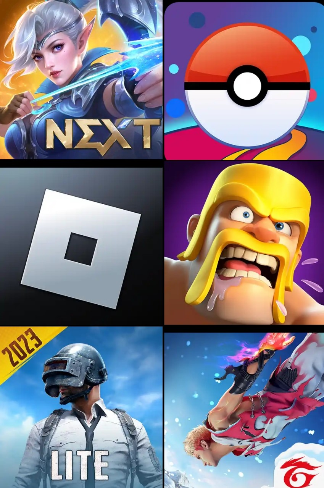

Os jogos Online que mais se destacaram
Hoje em dia com a Evolução do mundo dos jogos ha varios jogos que se destacaram no cenário dos jogos online que mais se destacaram.
Os que mais se destacaram sao os seguintes:
- Free Fire
- Roblox
- Clash of Clans
- Mobile Legends
- PubG
- etc